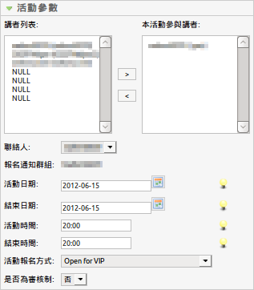
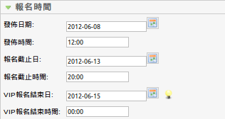
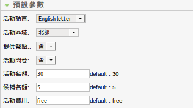
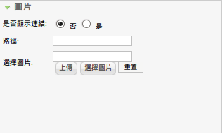

編輯或新增活動
編輯或新增活動
使用此功能: Components -> EventList -> Add Event 或 點選活動title
 Super Administrator
Super Administrator  Administrator
Administrator  Manager
Manager
應用: 儲存這次的修改後,停留在編輯頁面.
儲存: 儲存這次的修改後,跳回上一頁.
取消: 放棄這次的修改.
幫助: Opens this help screen.

活動標題:輸入活動標題.
別名:輸入活動別名,將會使用於url中,若沒有系統會自動填入.
發佈: 選擇活動是否發佈於活動列表當中
場地:選擇活動場地,若沒有活動場地可以新增一個場地,或著選取無場地
類別:選擇活動分類

講者列表:選擇活動講者, 活動講者清單可由群組功能中設定
聯絡人: 選擇活動聯絡人, 聯絡人清單可由群組功能中設定
報名通知群組: 當有使用者有參加或取消報名時, 所通知的群組, 清單可由群組功能中設定
活動日期:輸入活動日期(必填)
結束日期:輸入活動結束日期(選填)
活動時間:輸入活動時間(必填)
結束時間:輸入活動結束時間(選填)
開放報名日期:輸入開放報名日期(選填) 時間到了該活動會顯示於活動列表當中
開放報名時間:輸入開放報名時間(選填) 時間到了該活動會顯示於活動列表當中
活動報名方式:分為以下七種
| 關閉: | 使用者僅能看到活動訊息, 無法使用報名頁面 | |
| open: | 開放給普通會員報名參加 | |
| vip: | 只有擁有vip code的會員才可報名 | |
| open+vip: | 需要設定vip報名結束日期, 在vip報名結束日期之前只開放給擁有vip code的會員報名, 之後則開放給普通會員報名 | |
| open(all): | 所有人皆可參加 | |
| vip(all): | 只有擁有vip code皆可參加 | |
| open+vip(all): | 需要設定vip報名結束日期, 在vip報名結束日期之前只開放給擁有vip code的報名, 之後則開放給所有人報名 |
審核制:使用者報名活動後, 需要經過管理者審核才可參加活動, 當活動為審核制時, 報名人數則不受活動名額的限制, 而是以審核通過的人數做為關閉活動的依據

發佈日期:活動發佈時間, 預設為新增活動當天
發佈時間:活動發佈時間, 預設為新增活動的時間
報名截止日:報名截止日, 預設為活動開始當天
報名截止時間:報名截止時間, 預設為活動開始時間
vip 報名結束日:使用vip報名模式必填, 若沒使用vip報名模式則免填
vip 報名結束時間:使用vip報名模式必填, 若沒使用vip報名模式則免填

活動語言:給使用者的訊息所使用的語系 分為 中文 英文 以及中英合併
活動區域:選擇活動區域(若活動地點有選擇區域的話就會自動填入)
活動問卷:於報名表中詢問參加者從何處得知此活動
詢問餐點:於報名表中詢問參加者的飲食習慣(葷/素)
活動名額:可以參加活動的名額(選填), 預設為30.
候補名額:活動候補名額(選填), 預設為5.
活動費用:活動費用(選填), 預設為free.

是否顯示連結:顯示的活動圖片是否要連結網址
路徑:圖片欲連結的網址(若顯示連結則必填)
選擇圖片:活動所顯示的圖片
1.系統會將講者資料自動填入活動內容當中, 因此每次講者有異動時, 系統會自動更新為最新的講者資料, 因此設定活動時, 講者盡量避免更動, 否則講者資料一旦更新, 手動修改的講者資料會消失
2.NULL為空白講者表格, 若講者無會員時, 可使用空白表格手動將講者資料填上
當報名人數超過活動名額之後參加的人皆為候補名單. 當報名人數超過活動名額＋候補名額 活動則停止報名 但已報名者可取消.
在前台顯示以及寄發通知信時使用聯絡人的信箱寄出.其他功能並不會使用到聯絡人信箱.
若有使用vip+open模式的話此功能才會生效, 在設定的vip時間到達之前報名頁面皆會顯示vip報名表單, 直至到達設定時間後報名表單則顯示一般報名表單.
時間:報名截止時間ㄧ到即關閉
非審核制報名成功人數以及候補人數相加等於活動所設定的人數
審核制:依據管理者審核的人數, 直到審核通過的人數等於活動設定的正取+候補的人數為止